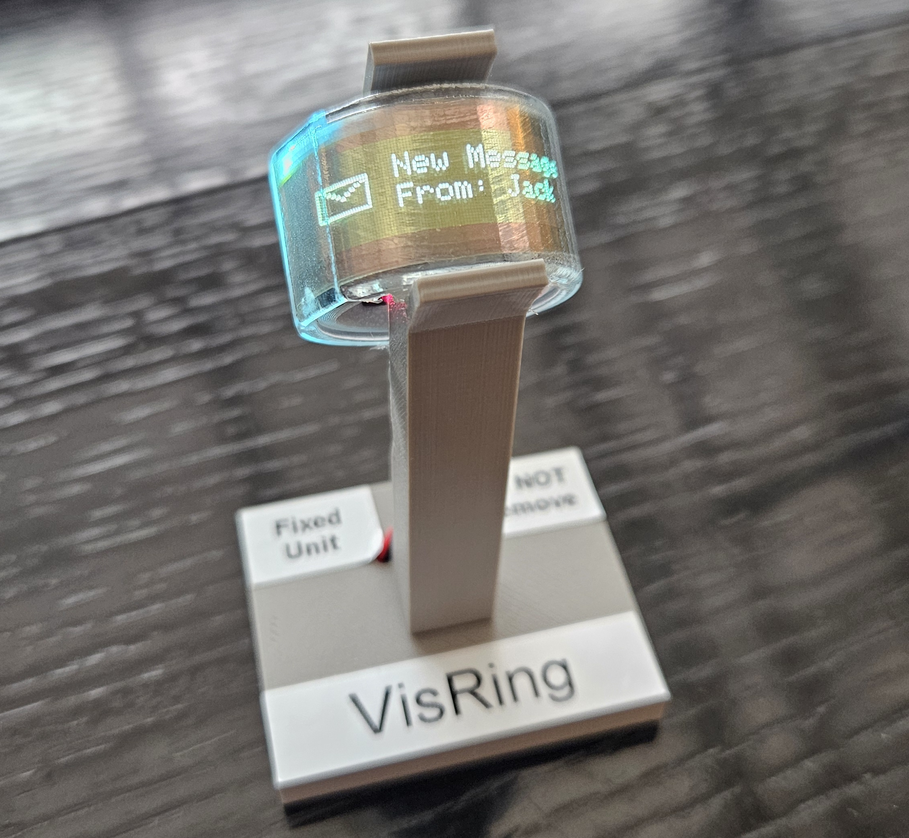

Demonstration of VisRing: A Display-Extended Smartring for Nano Visualizations

*contributed equally
Venue. UIST Adjunct (2025)
Abstract. We demonstrate VisRing, the first smartring incorporating a bendable 160 x 32 4-bit grayscale organic light-emitting diode display. VisRing stands out by displaying nano visualizations while maintaining a compact design and minimal weight of 6.6 g, with an overall cost of around $35. We exploit opportunities for a system-on-a-chip architecture to tightly integrate an inertial measurement unit, a photoplethysmograph sensor, a temperature sensor, Bluetooth, a microcontroller, and a display unit that spans 270° to 360°, depending on finger size. Our contributions include the hardware design and implementation of VisRing, along with a software library that supports visualizing various data types. A qualitative study with 12 participants demonstrated the comfort, likability, and social acceptance of VisRing's hardware and software. The participants liked the visualizations and found the ring lightweight, but also pointed out possible improvements. We will open-source VisRing hardware and software for further development of interesting usage scenarios. The demo will include a showcase of the VisRing system hardware assembly and hands-on and live testing of various VisRing applications, which include message delivery, time display, and health monitoring.
Link to this page: